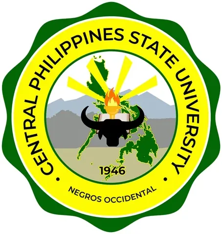

Pandayan ng Bayan — Metalworks & Fabrication Center
Central Philippines State University (CPSU) — implementing agency, with DOST Region VI (CEST) · Region XVIII: NIR
Pandayan ng Bayan is a DOST Community Empowerment through Science & Technology (CEST) metalworks and fabrication project in Negros Occidental, implemented by Central Philippines State University (CPSU) with DOST Region VI funding. CPSU serves as the project's implementing agency; four other Negros state universities and colleges act as collaborating agencies, each leading one of the project's five components.
- Category
- Fabrication Laboratory (FabLab)
- Host institution
- Central Philippines State University (CPSU) — implementing agency, with DOST Region VI (CEST)
- City
- Kabankalan City, Negros Occidental
- Region
- Region XVIII: NIR
- Operating status
- Operating
About the Center
The project's aim is to establish community metalworking and fabrication centers across all six districts of Negros Occidental, giving farming communities the capability to fabricate, repair, and maintain agricultural implements and replacement parts locally — reducing dependence on costly external repairs, improving farm productivity, and complementing rural industrialization. It combines metalworking training and 3D printing with community-empowerment programming across health, environment, disaster resilience, and human-resource development.
The project was launched in Bacolod City (May's Organic Garden, Brgy. Pahanocoy) and has since rolled out to district sites including the province's northern and 6th districts.
Five components and their lead SUCs
| Component | Lead SUC |
|---|---|
| Economic Development | Central Philippines State University (CPSU) — also the overall implementing agency |
| Disaster Risk Reduction & Management / Climate Change Adaptation | Carlos Hilado Memorial State University (CHMSU) |
| Health & Nutrition | Northern Negros State College of Science & Technology (NONESCOST) |
| Environmental Protection & Conservation | Philippine Normal University – Visayas (PNU-V) |
| Human Resource Development | Technological University of the Philippines – Visayas (TUPV) |
Collaborators: RU Foundry & Machine Shop Corp. and the Eco-Agri Development Foundation, alongside DOST Region VI.
Programs & Services
- Agricultural tool fabrication & repair — fabricating and repairing farm tools, agricultural equipment, and replacement parts for local farmers and cooperatives.
- Metalworking training — hands-on skills development in welding, machining, and metalworks, aimed at farm-implement manufacture and maintenance and at seeding rural industrialization.
- Community-empowerment programming — delivered through the five components: economic development (CPSU), DRRM-CCA (CHMSU), health and nutrition (NONESCOST), environmental protection (PNU-V), and human-resource development (TUPV).
- Province-wide, multi-site delivery — a distributed network of fabrication centers targeted at all six districts of Negros Occidental.
- MSME and cooperative support — technical assistance for rural enterprises and farmer cooperatives in metalworks, fabrication, and agri-equipment maintenance.
Sources: DOST VI — Metalworks, fabrication center project in NegOcc launched · DOST VI — Northern Negros farmers gear up for Pandayan · DOST VI — NegOcc 6th District receives Pandayan ng Bayan · DOST VI — Stakeholders gear up for Pandayan ng Bayan · CPSU Public Information Office
Contact
Sources & references
- region6.dost.gov.ph/2023/05/05/metalworks-fabrication-center-project-in-neg…
- region6.dost.gov.ph/2022/08/19/dost-vi-partner-stakeholders-gear-up-for-pan…
- cpsu.edu.ph/content/82
Details are drawn from public records and the sources above, July 2026.
Startupreneur Innovation Hub · synced from the Notion catalog (July 2026) · status: published.